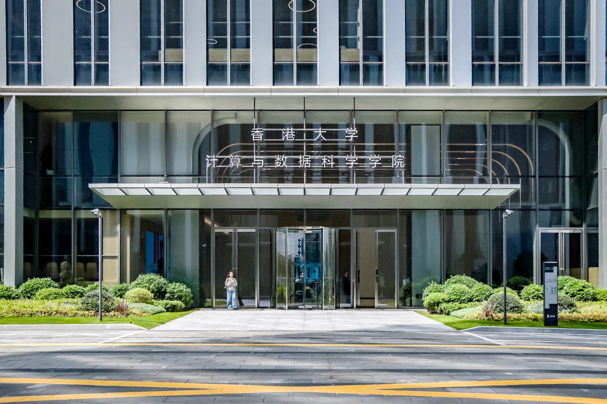
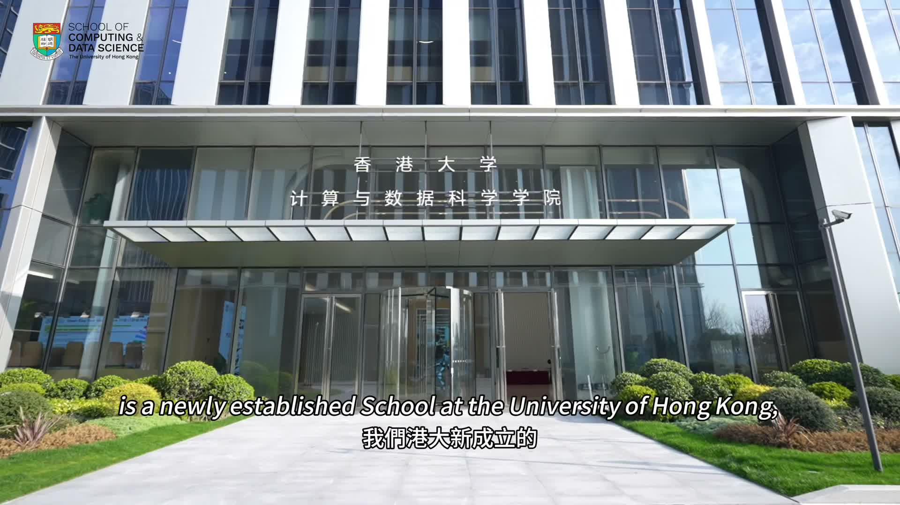
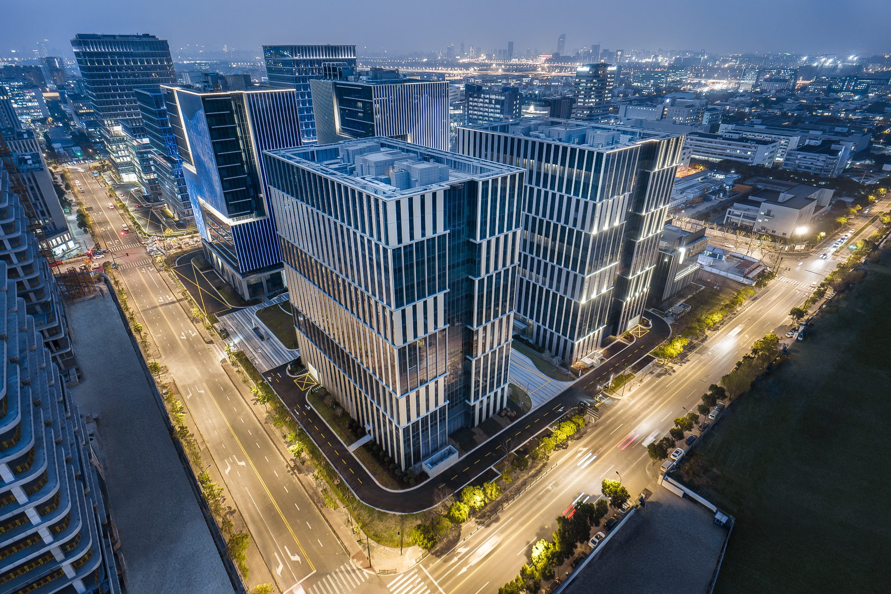
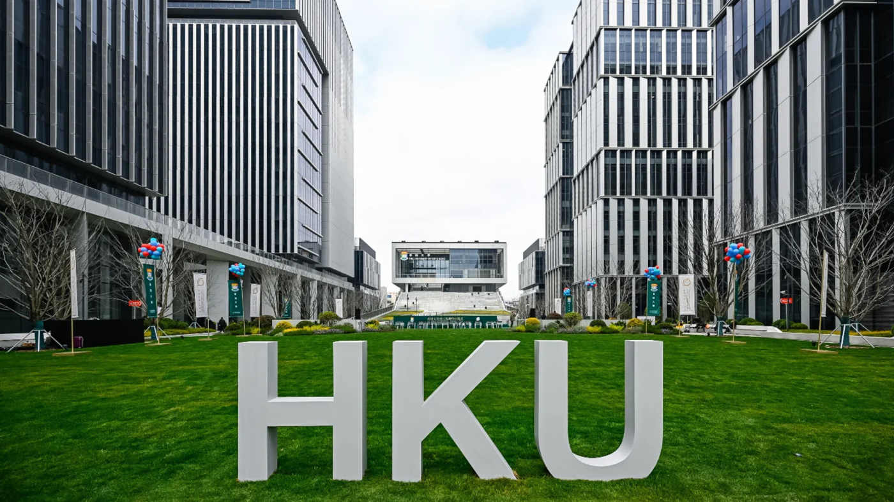
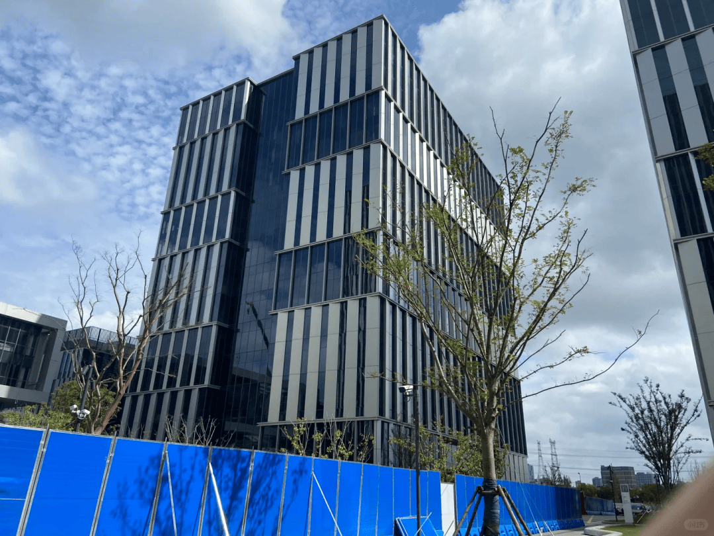
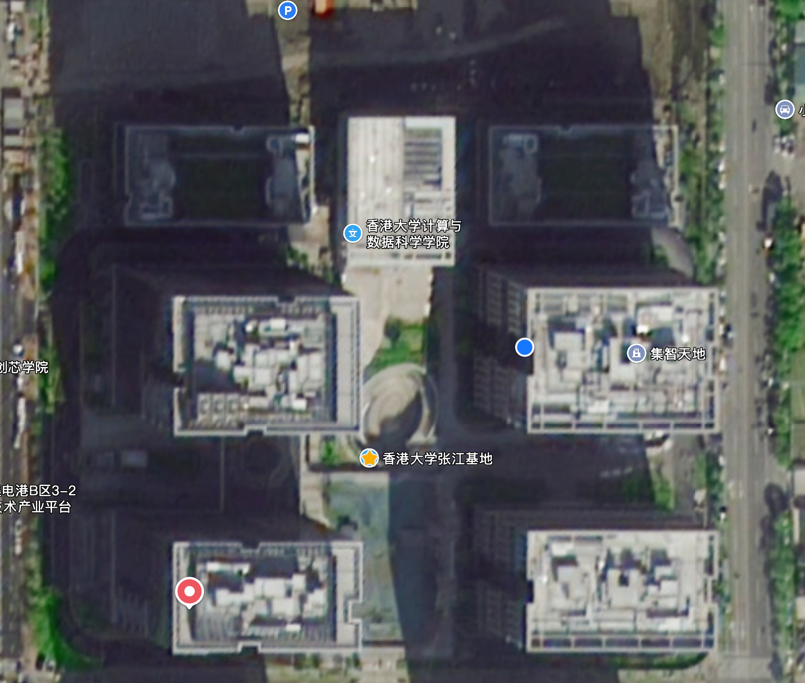

R01 · CDS-1 主入口实景
已确认HKU CDS (Shanghai) · 页面未标发布日期；路径含 2026/09，不等于拍摄日期
身份：Facilities 的 CDS-1 栏目；右侧导视牌可读 CDS-1；入口中文校名可见。
支持：双层高玻璃门厅、薄平雨棚、中央旋转门和两侧平开门、两侧植物、浅门槛。
边界：只有入口局部，不证明整栋层数、背立面或绝对尺寸。
原始页面 ↗ · 原图/视频 ↗

R02 · 官方 A/B/C/D 建筑对照
已确认主楼标注；交叉核对身份HKU CDS taught master programmes · 页面未标发布日期；文件路径 2025/12；图内标 Construction completed (April 2025)
身份：两张实景中的 C 明确标 CDS Main Building；结合 R01 入口形态、T02 楼号以及礼堂相对位置识别 CDS-1。
支持：主体长方体、中部内凹玻璃带、宽窄交替竖向构件、横向分段、与 A 礼堂/B 配套体块关系。
边界：右图是效果图，不能当作已建成场地或实测地图；C 与 CDS-1 的关联是交叉核对结果。
原始页面 ↗ · 原图/视频 ↗

R03 · 官网视频 00:26 主入口
已确认入口；同源连续帧合并HKU CDS (Shanghai) · 未标发布日；文件路径 2026/10；视频含 2026 活动画面
身份：中文门厅、雨棚、中央旋转门和两侧植物与 R01 对应。
支持：雨棚进深与骨架、入口空间及竖向构件。00:25 可见礼堂与主楼侧面，03:26 是体育区环境。
边界：视频为宣传剪辑；连续帧不算独立证据；城市航拍 00:34 不是校园，不用于模型。
原始页面 ↗ · 原图/视频 ↗

R04 · 设计方实景航拍：屋顶与楼群
主体身份与局部屋顶合理推断Chapman Taylor · 原新闻 2025-01-17；文件名 Jan_2025；精确拍摄日未知
身份：借 R02 中礼堂/中庭对应，目标是右后方靠礼堂的同类塔楼；前景相似塔楼不直接当作 CDS-1。
支持：矩形屋面、短边内凹、屋顶机房、目标楼与前方相似塔楼/低层配套的关系。
边界：目标屋面较远；不是精确正射图；设备数量与高度无法可靠测定。照片早于 HKU 装修改造。
原始页面 ↗ · 原图/视频 ↗

R05 · 2026 校方中庭实景
已确认校园，环境参考The HKU Lead · 2026-09-01；活动 2026-08-30
身份：新闻明确为张江基地；中央礼堂和两侧建筑与 R02/A04 对应。
支持：校园并列楼群、草坪及远处礼堂；帮助排除香港本部与上海其他基地。
边界：不能靠此图单独确定右侧每栋楼编号；未用其前景类似塔楼替代 CDS-1。
原始页面 ↗ · 原图/视频 ↗

R06 · 大台阶与礼堂（非 CDS-1 入口）
已确认邻近礼堂，排除为主入口HKU CDS taught master programmes · 页面未标日期；文件路径 2026/07
身份：R02 的 A Auditorium，相邻配套设施；不是高层 C 的主入口。
支持：相邻体块只做可开关的低细节方位提示；入口绝不采用这组大台阶。
边界：连接节点未测量，模型不建立宣称真实的连廊。
原始页面 ↗ · 原图/视频 ↗

P01 · 候选总平面（低清转载）
候选参考 / 暂定尺寸搜狐号“教育的灵魂”；原图作者/设计版次不可核实 · 转载 2025-10-20；图纸原日期不明
身份：与 R02 礼堂、双排塔楼和中央下沉广场组合对应；右列中部 4# 为候选定位。
支持：可辨 4# 框旁约 59.70 × 45.00、14F/3D、H66.15；作为可改的原型参数起点。
边界：不作为竣工图或已测定尺寸；数值可能是包络/规划高度，需原版图纸或测量校准；取约 ±20% 工作容差。
原始页面 ↗ · 原图/视频 ↗

P02 · 施工时期斜侧照片
候选参考，形态交叉检查搜狐转载；文中归属小红书“走走” · 转载 2025-10-20；拍摄日期未知
身份：内凹面、交替分段及左侧礼堂与 R02 对应；没有可读 CDS-1 门牌。
支持：从另一地面视角核对塔楼凹槽与多层分段。
边界：身份为多角度对应，仍保留候选级别；旧围挡不进入正常校园资产。
原始页面 ↗ · 原图/视频 ↗

M01 · 高德卫星视图（含 25 米比例尺）
布局已核对；尺寸仅粗检高德；界面署名 Image © DigitalGlobe & spaceview · 访问 2026-11-12；影像拍摄日期未公开
身份：校园礼堂、圆形下沉空间与两排高层和 R02/R04 对应；POI 标点本身不作为楼栋身份依据。
支持：总体轮廓与相邻关系。25 m 标尺约 86 px；目标屋面横向约 200 px，对应约 58 m，纵向约 150 px 对应约 44 m，仅作粗核对。
边界：屋顶偏移、投影、边界识别与截图像素引入约 ±10 m 粗估误差；不据此判楼层/内部。POI 显示集电路 305 号，与官网入口地址不同，未强行合并。西侧“4号楼”标签属于邻园，不等于 CDS-1。
原始页面 ↗ · 本地提供资料

U01 · 用户补充卫星截图
辅助参考用户提供；底图平台未明确 · 接收 2026-11-12；影像时间未知
身份：与 M01 地物和 R02 校园组合对应；未用图钉或定位蓝点判定 CDS-1。
支持：两排楼栋、礼堂、下沉空间与目标屋面凹入轮廓。
边界：没有比例尺、原页面 URL 与拍摄日期；仅交叉核对，不能独立测量。
本地提供资料